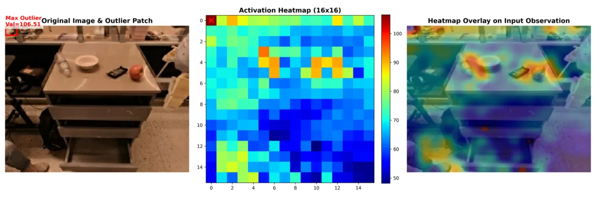
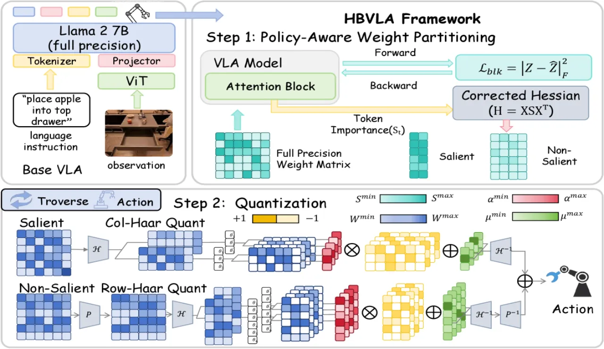
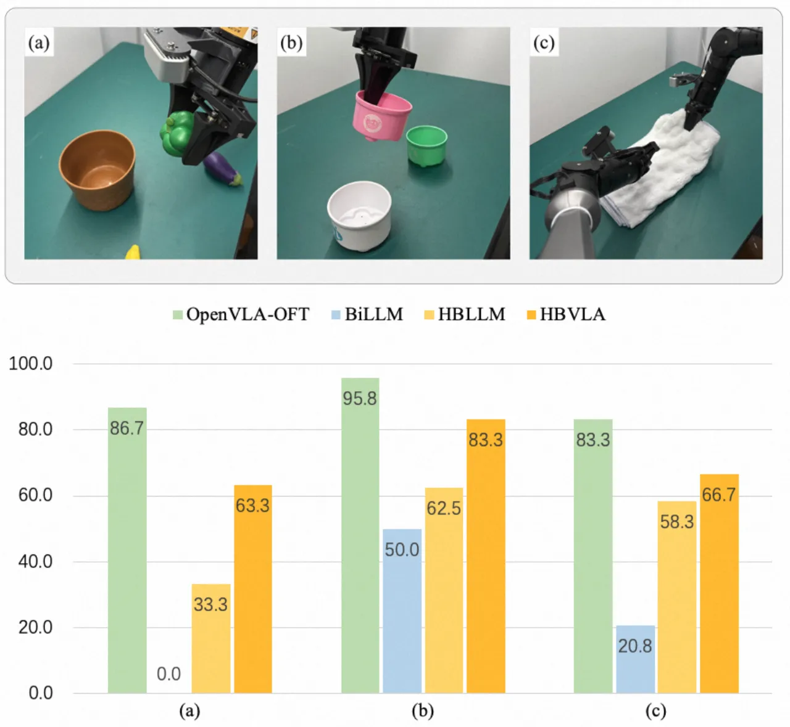
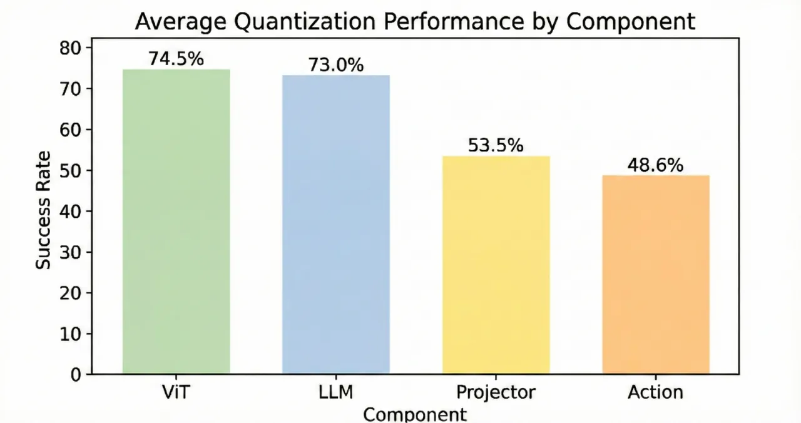

大型 Vision-Language-Action（VLA）模型在机器人上部署代价极高。HBVLA 提出一套专为 VLA 定制的 1-bit post-training quantization 框架：通过 policy-aware rectified Hessian 识别动作生成关键权重，再结合稀疏正交变换与 Haar 域混合量化，将 OpenVLA-OFT 压缩至 1.08 bit 仍保留 90.3% 性能（LIBERO），CogACT 在 SIMPLER 上保留 93.6%，实机验证效果接近全精度。
VLA 模型参数量庞大，难以在资源受限的机器人平台（如移动底座、嵌入式控制器）上实时部署。现有 LLM 二值化方法（BiLLM、BiVLM、HBLLM 等）在 VLA 场景下性能严重下滑，根源在于两类 VLA 特有问题：一是微小量化误差在闭环物理执行中被接触动力学放大、沿长视野任务累积，导致灾难性失败；二是视觉激活存在"双主导"现象（background outliers + visual token 不均衡），遮蔽了任务关键信号。
"Even subtle quantization-induced action deviations can be amplified by contact dynamics and compound over long-horizon execution, leading to catastrophic failures such as unstable grasps or large trajectory drift."

HBVLA 分三阶段解决 VLA 二值化难题：① Policy-Aware Weight Partitioning（权重显著性分区）；② Sparse Orthogonal Transform（稀疏正交变换）；③ Hybrid Haar Domain Quantization（混合 Haar 域量化）。整体目标是最小化量化前后 VLA 动作输出的 KL 散度，而非仅拟合权重本身。

传统 Hessian 度量将所有 token 同等对待。HBVLA 引入 policy-aware rectified Hessian： 对每个 token 计算其对动作生成路径的梯度贡献作为重要性权重 st，并将其加权到 Hessian 矩阵中：
H̃ = X·S·Xᵀ = Σt=1..N st · xtxᵀt
基于 H̃，权重矩阵被分为显著子集（salient，保留高保真量化）与非显著子集（non-salient，极限压缩）。
非显著权重通过稀疏正交变换（置换矩阵 + Haar 变换）优化权重几何结构，使高频能量最小化，再以 row-wise Haar 变换 + shared-mean 二值化完成量化。显著权重则采用 column-wise Haar 变换对残差进行高保真重建。两部分求和得到最终量化层。
置换策略通过贪心 pairing-and-chaining 算法选择，使 Haar 域中间态信息熵最低，解决多模态权重异质性（multimodal weight heterogeneity）问题。
在三个基准上评估 HBVLA：LIBERO（OpenVLA / OpenVLA-OFT，四个子任务）、SIMPLER（CogACT，Visual Matching + Variant Aggregation）、以及 Mobile ALOHA 真实机器人实验。基线方法：BiLLM、BiVLM、HBLLM。量化位宽均为 1.08 bit。
| 方法 | Spatial | Object | Goal | Long | Avg | Δ vs FP |
|---|---|---|---|---|---|---|
| OpenVLA-OFT (FP) | 97.6 | 98.4 | 97.9 | 94.5 | 97.1 | — |
| BiLLM | 59.2 | 61.4 | 65.8 | 44.3 | 57.7 | -39.4% |
| BiVLM | 67.8 | 69.7 | 68.4 | 48.9 | 64.0 | -33.1% |
| HBLLM | 87.2 | 76.0 | 89.6 | 62.0 | 79.2 | -17.9% |
| HBVLA (ours) | 89.3 | 97.8 | 91.3 | 82.7 | 90.3 | -6.8% |
| 方法 | Pick Coke | Move Near | O/C Drawer | Place Apple | Avg | Δ vs FP |
|---|---|---|---|---|---|---|
| CogACT (FP) | 91.3 | 85.0 | 71.8 | 50.9 | 74.8 | — |
| BiLLM | 37.0 | 45.8 | 32.4 | 0.0 | 28.8 | -46% |
| BiVLM | 76.8 | 62.1 | 52.7 | 16.7 | 57.1 | -17.7% |
| HBLLM | 80.7 | 81.7 | 64.4 | 22.2 | 62.3 | -12.5% |
| HBVLA (ours) | 86.7 | 81.7 | 71.8 | 38.4 | 70.0 | -4.8% |


| 置换准则 | Visual Matching 错误率 | Variant Aggregation 错误率 |
|---|---|---|
| ℓ₁-norm | 11.6% | 15.6% |
| ℓ₂-norm | 8.8% | 12.8% |
| Greedy Pairing (HBVLA) | —（最优） | —（最优） |
消融同时验证了 policy-aware Hessian 相对标准 Hessian 的优越性：在 Visual Matching 上错误率从 12.5% 降至 10.3%，在 Variant Aggregation 上从 13.4% 降至 12.1%。
论文明确指出："Even subtle quantization-induced action deviations can be amplified by contact dynamics and compound over long-horizon execution"。尽管 HBVLA 大幅缩小差距，但 1-bit 量化在超长视野任务（如 LIBERO-Long）仍有约 -6.8% 的性能损失，极端精密操作场景下风险依然存在。
在 SIMPLER Variant Aggregation 的 "Place Apple" 子任务中，HBVLA 仅取得 24.9%（全精度 46.6%，降幅 -21.7%），远差于其他子任务的表现。说明 1-bit 量化对需要高精度空间推理的任务仍存在瓶颈。
Policy-aware Hessian 的构建需要在特定任务数据上进行 block-wise gradient backpropagation，意味着最优量化配置与任务/环境分布绑定，跨域泛化能力未经充分评估。
论文聚焦于精度保留，未提供量化后模型在真实硬件上的推理延迟、内存占用或功耗数据，难以评估实际部署收益。